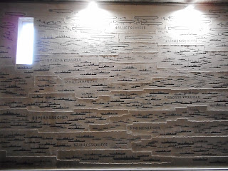
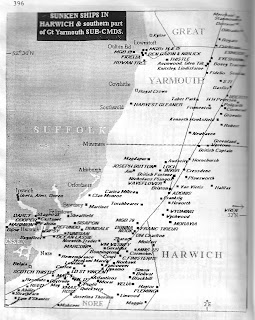
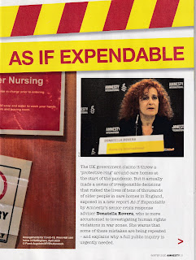
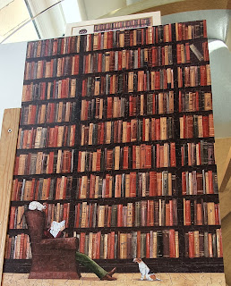

 |
| German ship losses WW1 |
{kind=link}
The first of the images are the roughcast concrete walls in the Laboe naval memorial on the Kieler Fiord. There are two walls facing across the main chamber. They are slate-grey like an officer’s field uniform and crammed with the thick black outlines of sunken ships. They record the Kaiserliche marine and Kreigsmarine losses in two world wars. It was the diagrammatic aspect that I found chilling. It encouraged one to compare and contrast 11 U-Boote lost in the first war with 840 in the second. 46 Luftschiffe in the first, none in the second -- as if this was about technological change not human lives. The crammed outlines on the second wall were unforgettable. They represented 120,000 dead and missing men
{kind=link}
{kind=link}
 |
| WW2 wrecks off the Suffolk coast (JP Foynes The Battle of the East Coast 1939-1945) |
{kind=link}
The UK dead of 2020 are as yet uncounted, despite the Covid figures nightly on TV - 62,000 at most recent date (excluding Scotland). More have died in a year than in six years of Navy losses. As the Archbishop of Canterbury pointed out yesterday with more than a million dead around the world (from Covid), ‘this Christmas for many will be an empty chair’. In Britain deaths from all causes are up this year - estimated to be approaching a 700,000 total. My personal three (non-Covid) are Francis's mother, Patricia, who died at the end of January, her sister Jo who died two weeks ago and a particular friend Hedwige who went soon after her 100th birthday in September, and who I mourn the more because I failed to be in touch on that special day. We managed a somewhat-mechanistic cremation for Patricia but there have been no ‘proper’ funerals, no coming together to celebrate and to mourn. Our dear dead remain to that extent in limbo.
This has been national grief awareness week (which I didn't know until I started writing this). At the moment every week feels like a grief awareness week. Last Tuesday at John’s Campaign we began sharing the results of a survey among relatives of people living in care homes. Over 40% reported they were 'banned' from visiting, with an almost equal number reduced to shouting through windows. For many this has been the situation since early March. Question 19 of the survey asked people about the impact of this separation on themselves.
A random selection from family comments collected from a single care home chain:
I feel like I have grieved for my mother in law it’s like she died. I only saw her a few days ago for the first time in nearly 9 months! I have experienced trouble sleeping and feel very anxious that we might never hold her hand hug her and see her properly ever again. It’s all very depressing and completely out of our control.
Difficulty sleeping, bad dreams, anxiety about loved one's well-being, inability to concentrate or control emotions. Suffering from complex grief and anguish over inability to keep promises, and fear for the future after having forfeited my job to enable safe visiting that I still have not been allowed to do. Feeling hopeless and powerless.
Had sleepless nights and cried a lot. Don't think I will ever get over the guilt I feel for not being there for them when needed in possibly their last year.
I have experienced palpitations and anxiety.
I worry constantly. We are all super super cautious of keeping well away from covid, probably much more so than any care worker I have seen who are still seeing their own families and going to shops, all in the hope that we will be able to see her and hug her and have meaningful visits. Or even bring her to our house for dinner which she loves so much to do.
Like everyone else I am having to deal with the rest of the family asking why this exclusion is going on so long. That in itself is stressful apart from visibly witnessing a marked deterioration in a man I greatly admire over which I currently have no control. Dad is 95 a D day veteran and had a degree of mental capacity before this all started. I have worked with Government in the past had have enlisted the support of MP's in trying to emphasise that there were effective policies in place before 5 November. I am afraid in trying to please everyone they have produced a complete mess of a process.
I used to see my mum every other day. I feel like she is dead now and I will never see her alive again.
This is grief without death - and if death comes while this grief (and guilt) is unresolved one fears for the survivor's future. The deaths in care homes from Covid-19, brought in by staff, visiting health professionals and hospital clearance policy whilst families are kept away are hard indeed to bear. As are all the 'normal' care home deaths from heart attacks, strokes, cancers, accidents and age. Too often they occurred uncomforted - did they also occur too soon, families wonder? What about the residents who believed they had been abandoned and decided that life in isolation was not worth living: ‘her last opportunity to exercise free choice’, as one doctor put it to a grieving husband, whose wife, Dorothy, had refused food and drink until she brought about her death.
How do you cope with a loss of that nature? It’s not a far-away death in battle or a shipwreck where you could not intervene or offer comfort: it’s a death which may have been caused because you were prevented from intervening or offering that comfort. I felt shaken and ashamed to find myself working alongside an Amnesty International investigator more used to considering human rights violations in war zones than in English social care. She was shocked by these atrocities committed in the name of kindness.
Nicci and I have been horrified by the alacrity and ingenuity as well the inhumanity with which some individuals have enforced the Separation rules. It’s equally unnerving to discover the apparent ease with which a public official can declare a prohibition on family visits - then presumably return to their own household with the feeling of a good day’s work done. These things give an unwanted insight into historical behaviours one would rather forget
 |
| Donatella Rovere, author of English care homes report As If Expendable (Amnesty International) |
{kind=link}
We have also learned a great deal about love. A daughter remarked: 'I often thought my mother was quite irritating -- I never realised just how much I loved her, until now.' I think many policy-makers missed that basic fact of profound, unarticulated love. They also have been guilty of disregarding the full humanity of people living with dementia and old age. So, while I will forever be grateful for the 2020 discovery of our wonderful human rights lawyers, Tessa Gregory and Carolin Ott, I think I’d rather leave you with retired headteacher Penelope Watkins as she says a slow goodbye to her extraordinary mind.
It's time the rays of the sun came out from behind the moon.
 |
| Penelope's choice of a picture to accompany her piece She's right, books don't get dementia and will outlast us all. |
{kind=link}